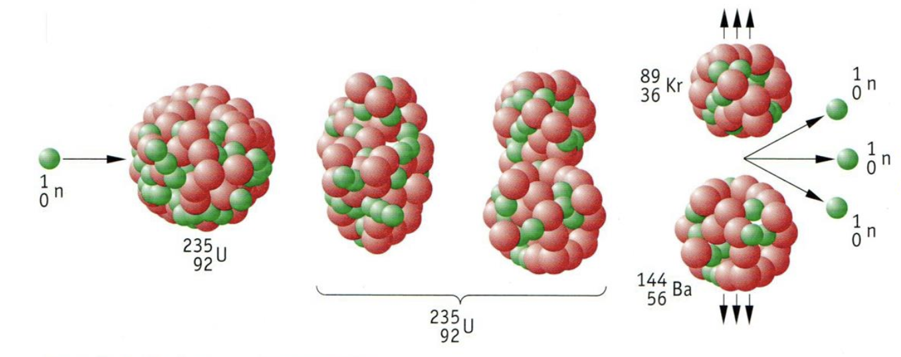

Kernkraftwerke
Kernenergie
Als Kernenergie bezeichnet man die Ausbeutung der Energie, die in den
Atomkernen besteht.Diese Energienutzung ist neu und gibt es erst seit
den Jahren.
Jedoch war anfangs keine
friedliche Nutzung vorgesehen sondern die Nutzung in der Atombombe.
Kernspaltung
Im Jahre entdeckten die Physiker Otto Hahn und Fritz Strassmann die Kernspaltung
Funktionsweise
Beschieβt man einen Uran $\ce{^235U}$-Kern mit einem Neutron, so bildet sich ein zwischen Kern der dann zerfällt und in zwei Kerne spaltet. Dabei werden 2 bis 3 Neutronen freigesetzt.
Bei dieser Spaltreaktion werden pro gespalteter Kern etwa $200 MeV = 3 \cdot 10^{-11}J$ freigesetzt.
Kettenreaktion
Um groβe Mengen an $\ce{^235U}$ Spalten zu können gebraucht man
sich der Kettenreaktion. Da pro Spaltung 2 bis 3 Neutronen freigesetzt
werden bildet sich eine Kettenreaktion.
Die Kettenreaktion erlaubt es groβe Mengen an Energie freizusetzen.
Vermehrungsfaktor
Die Kettenreaktion zieht jedoch mit sich, dass die Reaktion lawinenartig anwächst. Um das technisch zu beschreiben definiert man den Vermehrungsfaktor $k$.
Formel
$$ k = \frac{Anzahl\ der\ nachfolgenden\ Spaltungen}{Anzahl\ der\ vorherigen\ Spaltungen} $$Vermehrungsfaktor |
Zustand |
Beispiel |
Bezeichnung |
|---|---|---|---|
$k < 1$ |
Die Anzahl an Spaltungen nimmt ab |
Herunterfahren des Reaktors |
unterkritisch |
$k = 1$ |
Die Anzahl an Spaltungen bleibt konstant |
stationärer Betrieb des Reaktors |
kritisch |
$k > 1$ |
Die Anzahl an Spaltungen nimmt zu |
Hochfahren des Reaktors |
überkritisch |
Stationärer Betrieb
Um den stationären Betrieb des Reaktor aufrechtzuerhalten muss eine
mindest Menge, genannt kritische Masse, an Spaltstoff vorhanden sein.
Wird die kritische Masse überschritten, so verlassen zu viele Neutronen
den Spaltstoff ohne eine Spaltung zu bewirken. Dies kann verhindert
werden mit Neutronenreflektoren der die Neutronen wieder ins
Spaltprodukt reflektiert.
Wechselwirkung zwischen Neutron und Kern
Wenn ein Neutron auf